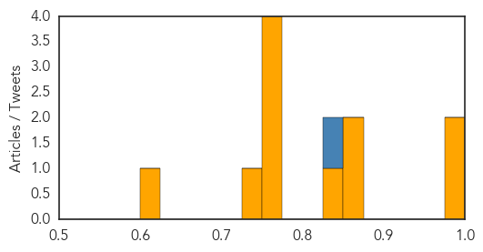
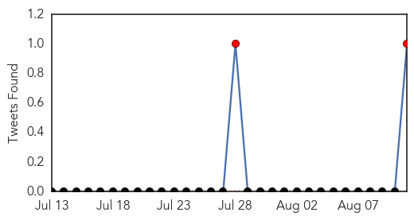

Influenza
30-Day Web Trend
0 alerts, 0 warnings

30-Day Twitter Trend
1 alerts, 0 warnings

Article Locations

Article Confidences
Top Articles:
- 0.999
- News Scan for Aug 10, 2015
- 0.997
- Get your jabs, warn doctors as flu cases rise in Alice Springs despite warmer weather
- 0.865
- Infection A Major Threat To Hajis
- 0.863
- World Population Could Nearly Double by 2100
- 0.836
- MN turkey growers want bird flu vaccine, but it's no cure-all
- 0.751
- August 10, 2015 Archives
- 0.751
- August 10, 2015 Archives
- 0.751
- August 10, 2015 Archives
- 0.751
- August 10, 2015 Archives
- 0.732
- Farmers want bird flu vaccine, but it's no cure-all
- 0.625
- USDA: Preparations In Place For Bird Flu In Georgia
Top Tweets:
- 0.968
- RT: Understanding The Influenza Virus Strain http://t.co/gfDX4XaX6i influenza health flu
- 0.862
- RT: Flu Attack! How A Virus Invades Your Body http://t.co/LCn3qRr1FK Grippe Gripe Influenza
Meningitis
30-Day Web Trend
0 alerts, 0 warnings

30-Day Twitter Trend
2 alerts, 0 warnings

Article Locations

Article Confidences

Top Articles:
Top Tweets:
- 0.653
- T8 These vaccines protect against meningitis, HPV cancers, whooping cough, and seasonal flu and are recommended at ages 11-12. abcDrBchat